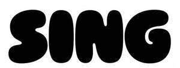

Trade Mark Journal No.2025/032 8 August 2025
UK00004237866 22 July 2025 (5,34)

- Class 5
- Pharmaceuticals, medical and veterinary preparations; sanitary preparations for medical purposes; dietetic food and substances adapted for medical or veterinary use; plant and herb extracts for medicinal use; pharmaceutical preparations including cannabidiol; cannabis for medical purposes; cannabidiol (CBD] for medical use; tetrahydrocannabidinol [THC] for medical use; marijuana for medical purposes; medical products containing cannabidiol (CBD); cannabidiol (CBD) oil capsules; cannabidiol (CBD) oil derived from the hemp plant; medicated sweets containing cannabidiol (CBD); Oral strips containing cannabidiol (CBD); sublingual strips infused with cannabidiol (CBD); oral strips containing tetrahydrocannabinol (THC); sublingual strips infused with tetrahydrocannabinol (THC); oral strips derived from hemp; oral strips infused with hemp oil; sublingual strips infused with hemp oil; medicated candy; medicated chewing gum; medicated lozenges and gums containing a nicotine substitute for smoking cessation; nicotine candy; nicotine candy for use as an aid to stop smoking; smoking herbs for medical purposes; nicotine gum for use as an aid to stop smoking; nicotine patches for use as aids to stop smoking; nicotine pouches for use as aids to stop smoking; dissolvable nicotine strips for use as aids to stop smoking; pouches containing nicotine; nicotine preparations for medical purposes.
- Class 34
- Tobacco and tobacco substitutes; cigarettes and cigars; electronic cigarettes and oral vaporizers for smokers; smokers’ articles; matches; chewing tobacco; smokeless tobacco; tobacco powder; leaf tobacco; hand-rolling tobacco; tobacco grinder; tobacco pouches; flavourings, other than essential oils, for tobacco; oral vaporizers for smokers; electronic cigarettes; electronic cigarette cleaners; electronic cigarette cartomizers; electronic cigarette atomizers; electronic smoking pipes; smoking pipe cleaners; mouthpieces for electronic cigarettes; protective cases for electronic cigarettes; cartridges for electronic cigarettes; liquid solutions for use in electronic cigarettes; vape cotton; flavourings, other than essential oils, for use in electronic cigarettes; cigarettes containing tobacco substitutes, not for medical purposes; menthol cigarettes; herbs for smoking; hemp products for smoking; marijuana for smoking; marijuana products for smoking; cannabis for smoking; cannabis products for smoking; snus with tobacco; snus without tobacco; snus containing tobacco substitutes, not for medical purposes; hookahs; ashtrays for smokers; smoking sets; cigar cases; cigar cutters; cigar holders; cigarette cases; cigarette fillers; cigarette holders; cigarette paper; cigarette tips; lighters for smokers; tobacco pipes; pipe cleaners for tobacco pipes; pipe racks for tobacco pipes; filter tips for cigarettes; snuff; snuff boxes; snuff bottles; snuff containing tobacco substitutes, not for medical purposes; matchboxes.
Cloud South Holdings (HK) Limited
Representative: Groom Wilkes & Wright LLP